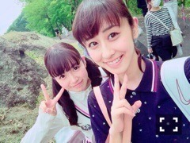
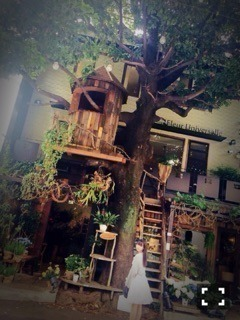

| 2015/05 23 Sat | ひめたん-OoO-その545 |

明日は横浜で個別握手会( ˇωˇ )
遊びに来てくれるみんなよろしくね～
選抜発表があって初めての握手会ですが
ひめは元気なので
楽しいお話がしたいです！！
1部のひとはお寝坊禁止だよ♡
のぎ天ゴルフ部合宿 前編公開中！
ひなちまのままがのぎ天みて
「みんなフォームがきれいだねぇ」って
褒めてくれたんだって( ´•̥ω•̥` )
ひなちまままーらぶーー( ´•̥ω•̥` )♡

れなちさんの休業が発表されました。
学生組を見ていて
活動と学業の両立って本当に
大変だなってハラハラしながら、でも
一生懸命両立する姿は
イキイキしててステキだなって
いつも思っています！
れなちさんの何に対しても
真っ直ぐに向かい合う姿勢が
私は大好きだし尊敬します。
少しの間とはいえ休業は寂しいけれど
また次のシングルで
元気に戻ってきてくれると思うので
私はれなちさんを信じて
応援しています！
じょしらく頑張ろうね～(´｡･v･｡｀)
❁お知らせ❁
6/2 グラビアザテレビジョン
6/8 TopYell
6/9 UTB+
6/20 月刊ヤングマガジン

 ひめたんはアイスクリーム系か
ひめたんはアイスクリーム系か
シャーベット系か
どちらがお好みかしら？
アイス系！断然アイス系！
ミルク入ってそうなやつの方が
好みです！
パソコン壊「れ」たの？
パソコン壊「し」たんじゃなくて？
(じろじろ)
や、や、やめてください
ほんとに私はボタンを
押しただけなんですってば。
ツインテールって慣れれば
毎日同じ場所で結べるようになるの？
うん⌒(｡･.･｡)⌒
ひめは今は耳の高さって覚えてる♪
ひめたんは羊羹は好きかな？
いもようかん好き♡
全国ツアーで
広島まわるみたいだけど
広島にはあんまり帰れてないのかな？
バレッタの時に1回帰ったっきり
もう2年経ちます( ´•̥ω•̥` )
帰りたいとは思っているんだけど
まとまった休みがなかなかなくて......。
ひめたんの日記の
コメント欄下２ケタに46を踏んだ方へ
手書きでコメ返するコーナー
＼ ひめたん46 ／

あのねパソコンが壊れたんだけどね
紙を印刷する分には
何も問題ないから安心してね
インターネットもできるんだけどね～

「イニシエーション・ラブ」
いよいよ映画公開になりましたね～
私も原作を読んで
衝撃のラストに目を疑い
まんまと読み返した1人なのです！
映画楽しみにしていました！観なきゃ！
(＊´・ω・＊)
コメント(860)
2015/05/23 23:36